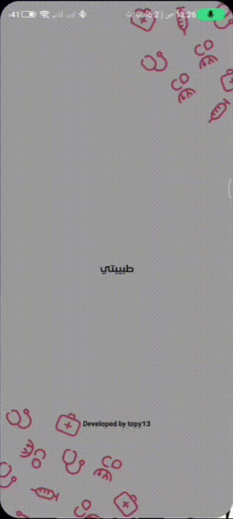

منصة متخصصة تهدف لتوفير الخصوصية والراحة للنساء عبر تسهيل الوصول للطبيبات والمراكز الصحية النسائية.
تحميل التطبيق (APK)
رفع الحرج عن النساء وتوفير بيئة علاجية مريحة من خلال الوصول السريع لأقرب طبيبة متخصصة أو مستشفى بطاقم تمريض نسائي متكامل.
دليل مفصل يحتوي على عناوين العيادات، أرقام التواصل، ومواعيد العمل لأطباء ومستشفيات في جميع التخصصات.
إمكانية البحث باسم الطبيبة، المنطقة، أو التخصص.
فلترة خاصة: البحث عن مستشفيات بطاقم نسائي (كامل أو شبه كامل).
أزرار اتصال مباشر وحجز مواعيد لتسهيل الرحلة العلاجية وتقليل عناء البحث.